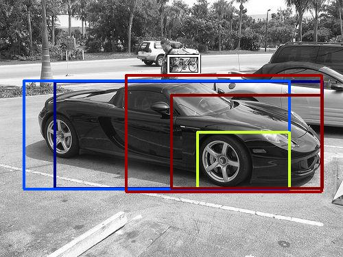

0.465140

0.478622

0.504675

0.568646

0.628550

0.654619

0.659445

0.666345

0.681564

0.689385
| Target image | 0.465140 | 0.478622 | 0.504675 | 0.568646 | 0.628550 | 0.654619 | 0.659445 | 0.666345 | 0.681564 | 0.689385 |
| Target image  |  1929.691895 |  1777.944702 |  1702.984741 |  1618.721191 |  1611.634277 |  1478.559082 |  1478.311157 |  1427.313843 |  1388.898804 |  1349.561279 |
Target image |  32037.445312 |  28693.562500 |  24867.585938 |  21581.013672 |  15524.169922 |  15084.156250 |  13869.335938 |  13362.622070 |  11088.335938 |  9624.584961 |
Target image |  38624.011719 |  35700.269531 |  30458.423828 |  29469.662109 |  27663.304688 |  21453.046875 |  21378.542969 |  17370.951172 |  15615.116211 |  14466.208984 |
Target image |  1747.188110 |  1671.401489 |  1519.838135 |  1356.371460 |  1253.478638 |  1249.960571 |  1198.149780 |  1136.480469 |  1116.757812 |  1114.677734 |